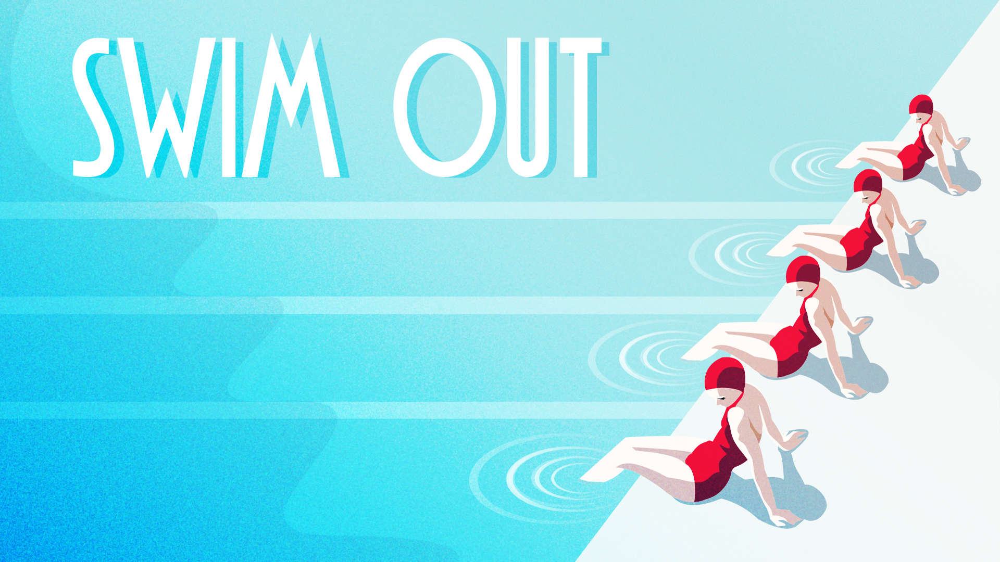

Description
Dive into the relaxing and refreshing atmosphere of Swim Out, a strategic, turn-based puzzle game, that will transport you into a sunny day by the swimming pool, the river or the sea. Plan each of your strokes wisely and be sure to never cross any other swimmer's path if you want to peacefully enjoy the sea view on a cosy chaise-longue.
Features
- Over 100 levels nestled in carefully crafted landscapes, soothed by the sound of seagulls, frogs or water splashes.
- 7 chapters combining :
- - 12 different types of swimmers : each with their own way of moving around, ranging from the simple breaststroke swimmers to the more complex divers or cheeky water-bombing kids
- - 12 different objects to interact with : buoys, fins, water guns, you can even ride a kayak!
- - 6 disruptive environmental elements like waves, crabs or jellyfish that will give your brain a workout until you swim out!
Languages
- International (no text ingame)
Videos
trailer — YouTube
Images


{kind=link}
Logo & Icon
{kind=link}
Awards & Recognition
- "GDC Summer 2020" Artwork selected at GDC Artists gallery
- "TIGA Games Industry Awards 2018" Finalist for Creativity Award + Best Strategy Game
- "Indie Prize 2018" Finalist
- "Ping Awards 2017" Finalist for Best Mobile Game
- "TIGA Games Industry Awards 2017" Finalist for Best Puzzle Game
Stores Featurings
- iOS App Store - Games (Banner featuring) - January 21st, 2021
- Google Play Pass - Jeu du moment - January 1st, 2021
- iOS App Store - Game of the day - April 27, 2018
- Mac App Store - Featuring - March 22, 2018
- iOS App Store - Best games Made in France - July 13, 2018
- Mac App Store - Our favorite indie games - September 25, 2018
- Google Play - New indie highlights - September 07, 2018
- iOS App Store - Our favorite games of Paris Games Week - November 4, 2017
- Google Play - Indie Picks - October 15, 2017
- iOS App Store - New games we love - October 08, 2017
- iOS App Store - Superb games for iPad - February 22, 2019
- iOS App Store - No instruction needed - September 1, 2019
- Google Play - New games - October 8, 2017
- iOS App Store - Perfect for iPhone X - March 2, 2018
- Mac App Store - Play to relax - May 11, 2020
- Google Play - 5 games for Bastille Day - July 13, 2018
- Kartridge - developer spotlight - February 2019
- itch.io - September 19, 2018
- GameJolt - May 19, 2017
Quotes
-
Swim Out is a gorgeous, stylish pool puzzler
Philippa Warr, Rock, Paper, Shotgun -
I am delighted by how unfamiliar a swimming experience this is to me
Alice O'Connor, Rock, Paper, Shotgun -
There are precious few things I appreciate more than a straightforward puzzle game with a strong commitment to its aesthetic, and Swim Out is exactly that
Janine Hawkins, Waypoint -
If you're a fan of puzzle games Swim Out is very likely for you. It's attractive, intuitive, and fun.
Nick Vigdahl, Touch Arcade -
The game truly captures that feeling of relaxing by the pool on summer vacation. I didn’t know I wanted that on my Switch, but I’m glad I’ve got it now.
Alex Santa Maria, TechRaptor -
Nostalgic infused swimming has never been such fun!
Daniel Waite, Bonus Stage -
Swim Out looks like the perfect tactical escape into a lush digital paradise
Rob Funnell, Touch Arcade -
Swim Out is a perfect summertime game.
John Voohees, Mac Stories -
(FR) Porté par une direction artistique ultra léchée et faisant de gros clins d'œil aux affiches touristiques art déco d'il y a près d'un siècle, Swim Out réussit à la fois à séduire par son gameplay joliment tricoté et par son style singulier qui donne au titre une atmosphère bien chouette.
Thomas Méreur, GameKult -
(FR) Nos 10 jeux indés de 2018 à ne pas rater sur la Switch
Erwan Higuinen, Les Inrocks -
(FR) plaisir aquatique et immersion dans le bain de la logique
Béatrice Kahn, Telerama -
(FR) parfait pour vous occuper les méninges et faire remonter les souvenirs de la douce chaleur d’été lors de vos froids trajets cet hiver
Jules Auriac, Le journal du Geek -
(FR) un véritable OVNI : unique en son genre et tout à fait fascinant (...) Long, complet, intéressant et stylisé, il contient tous les ingrédients d’une petite perle.
, Best of Switch -
(FR) une petite merveille à découvrir pour éviter le coup de chaud caniculaire
, Kick My Geek -
(FR) incontestablement l'un des jeux de cet été, qu'il prolonge agréablement
, iPhon.fr -
(FR) une admirable réussite (...) un hit surprenant
, Puissance Nintendo
Main Articles
- Rock, Paper, Shotgun (Review)
- Rock, Paper, Shotgun (Preview)
- Waypoint
- Touch Arcade (Review)
- TechRaptor
- Touch Arcade (Release announcement)
- Mac Stories
- Touch Arcade (update)
- Cubed3
- Gamezebo
- Bonus Stage
- Game Skinny
- Gamer Guy and Gals
- Digitally Downloaded
- iMore
- Droid Gamers
- Android Police
- TapSmart
- Spider Mac (IT)
- Gaming on Linux
- Pure Nintendo
- PS4Blog
- Arcade Wednesday
- (FR) GameKult
- (FR) Les Inrocks
- (FR) Telerama
- (FR) Le journal du Geek
- (FR) JeuxVideo.com
- (FR) Best of Switch
- (FR) Actugaming
- (FR) Xbox or not
- (FR) Kick My Geek
- (FR) Nintendo Difference
- (FR) iPhon.fr
- (FR) Puissance Nintendo
- (FR) Game Guide
- (FR) Nintend'alerts
- (FR) Nintendo Town
- (FR) Xbox Squad
- (FR) Margxt
- (RU) Yablyk
- (BR) Nintendo Blast
- (NL) iCulture
- (SP) El Android Libre
- (JP) 4Gamer
- (JP) AppBank
- (DE) iPlayApps
- (DE) appgefahren
- (AT) Weltenraum
- (PL) AntyApps
- The Apple TV Gaming Blog
- (CN) Geme
- (IT) DudeMag
- Linux game news
- (YouTube) Gameranx
- (YouTube) ElChurches
- (YouTube) Fliptroniks
- (YouTube) (FR) Koinsky
- (YouTube) The Killer Bits
- (YouTube) SKClanTVBG
- (YouTube) Dad's Gaming Addiction
- (YouTube) AppUnwrapper
- (YouTube) Stuff we play
Additional Links
- Website
- Swim Out website : swim-out.com.
- Lozange Lab account : twitter.com.
- Swim Out page : facebook.com.
- Lozange Lab account : instagram.com.
About Lozange Lab
- Boilerplate
- Established in 2014, Lozange Lab is an indie developer studio based in Metz, France, consisting of Ava and Mat, a husband and wife team who delicately craft indie games and interactive installations with love and passion.
- More information
- More information on Lozange Lab, our logo & relevant media are available here.
Swim Out Credits
- Ava Loz
- Dev + design
- Mat Loz
- Dev + audio
Contact
- Business/press/influencer contact
- info@lozange-lab.com